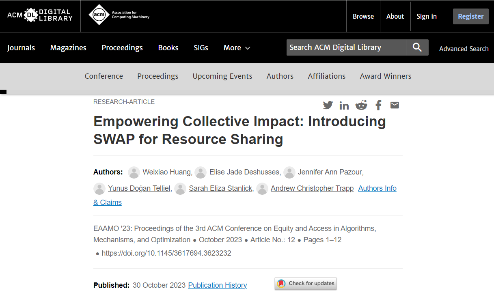

I am passionate about improving the world by leveraging multidisciplinary and diverse perspectives in engineering. I have industry experience in SAAS as well as experience in academia on an interdisciplinary research team working with the nonprofit sector. As a result, I have acquired skills in various areas from data collection and analytics, to designing machine learning models, to finding optimal solutions to systems and challenges. I am particularly interested in optimization and leveraging technology for societal improvements, whether through computer science, industrial engineering, or anything in between. I am committed to using my diverse background to drive innovative solutions and make a positive impact.
Java, JavaScript, C, Python (focus in ML packages)
With limited experience in Assembly Language and MATLAB.
Jenkins, Bitbucket, SourceTree, Jira, API Testing
SQL, React, AWS (Lambda, S3, EC2, RDS, API Gateway, etc.)
Gurobi, Arena Simulation, MS Office (Excel: VBA, @Risk, PrecisionTree, etc.)
VBA, Python (focus in data visualization)
With limited experience in R and Microsoft Visio.
Six Sigma Green Belt Certified, IISE (2020-2023)
SolidWorks Mechanical Design Certified (CSWA level)
English, French (bilingual)
Internships and work opportunities.
Tested stories, bugs, and epics as part of the Experiences SCRUM team, collaborating on Jira.
Documented features, API calls, HTML, and CSS, with functional specifications as part of the SDLC.
Conducted and designed tests, and wrote automated tests in Java for the Jenkins QA Dashboard.
Continued on the Experiences team with the same testing and automated testing tasks.
Partook in software deployments to update and improve the product mainframe.
Wrote documentation and worked with a Product Manager on the unauthenticated experience.
Collaborated with an interdisciplinary team to optimize resource-sharing between nonprofit organizations (NPOs).
_____________________
Designed and wrote simulations in Python and the Design of Experiments (DOE) to test our models under various scenarios.
_____________________
Mentored and managed four undergraduate students, including in developing ‘rules of engagement’ to maintain a stable market, and designing an optimal clustering algorithm for forming cohorts of NPOs.
_____________________
Check out our publication (18% acceptance):
Included: Integer Programming, Linear Programming, Convexity, KKT Conditions, Gurobi Optimization.
Included: Design of simulations, queueing models, inventory, gaming situations, and Arena Software.
For Professor Trapp
Included: Microsoft Excel, VBA, Python, and regular expressions.
I got second place in my school's art competition in first grade.
In high school, I was named "Ms. Compression Sleeves" by my Track team.
I like taking pictures of fancy doors on vacation.
Feel free to email me at ejdeshusses@wpi.edu.